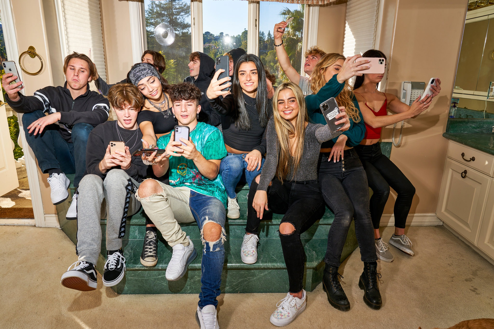
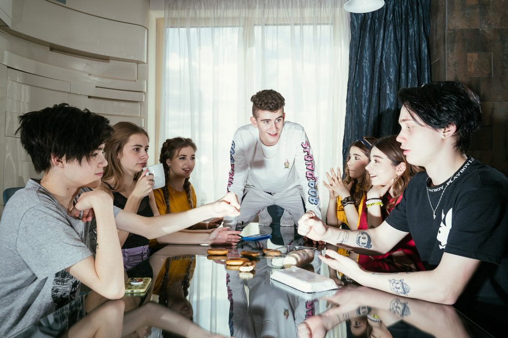
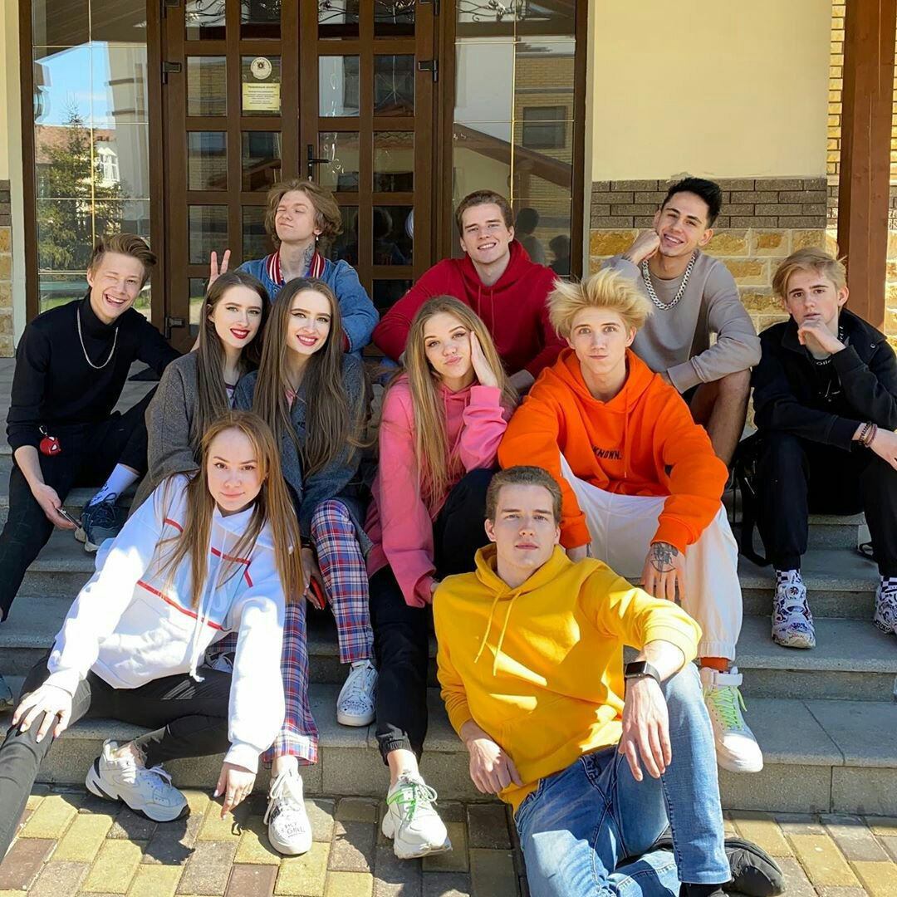

"Команды" Тик Тока
С недавних времён на просторах Тик Тока, а чаще всего в разделе Рекомендации, вы можете встретить ролики разных объединений блогеров. Они собираются, чтобы снимать совместные видео, проводить время вместе и радовать фанатов разноформатным контентом. Как правило, это достаточно известные блогеры, которые снимают на протяжении долгого времени. Но часто встречаются случаи, когда несколько завирусившихся роликов автора приносят ему немалую известность и узнаваемость в кругах зрителей Тик Тока. Из всех таких блогеров и собираются такие "команды". Считается, что данная идея пришла из Америки. Первой объединившейся командой, которая также арендует собственный особняк является Hype House. Постоянное проживание оформлено только у 4 человек – это два создателя Томас и Чейз, а также две девушки Коувр Аннон и Дейзи Кич. Остальные 15 участников это: Чарли Д’Амелио, Дикси Д’Амелио, Авани Грегг, Эддисон Рае, Коувр Аннон, Чейз Хадсон, Ондреас Лопес, Тони Лопес, Ларри Мерритт, Ник Остин, Джек Райт, Риланд Стормс, Хути Херли, Патрик Хастон, Келвин Голдби, Вият Ксавьер.
Первой русской наиболее известной командой стала Dream Team. В начальный состав объединения раскрученных тиктокеров вошло 14 человек. Однако, как заявляют сами участники, это не финиш и команда будет пополняться. Правда условия и правила о том, как попасть в их группу – не озвучиваются. Креативные менеджеры этой компании самостоятельно отслеживают в TikTok свежие и совершенно уникальные тренды. И те, кто создает новые веяния в приложении, возможно будут приглашены в Дрим Тим Хаус. Даниил Милохин, лидер сообщества; Никита Авдеев, Ксения Зверева, Ника Гесер, Артур Бабич, Анна Покровская, Мария Горячева, Карина и Марина Манукян, Владислав Кочепасов, Анастасия Усеева, Олег Романенко, Амина Мирзоева, Диана Астер.
Вслед за ними потянулись и более молодые, но не менее известные тиктокеры Андрей Ноилс, Ангелина Колчанова, Сергей Николаев, Артем и Кирилл Верзаковы, Вася Кривовязый, Итс Данила, Владислав Попов, Люба Бич, Алина и Кристина Кошкины. Они организовали Just Team и также в скором времени обрели общее место проживания и стали называться Just Team House.
